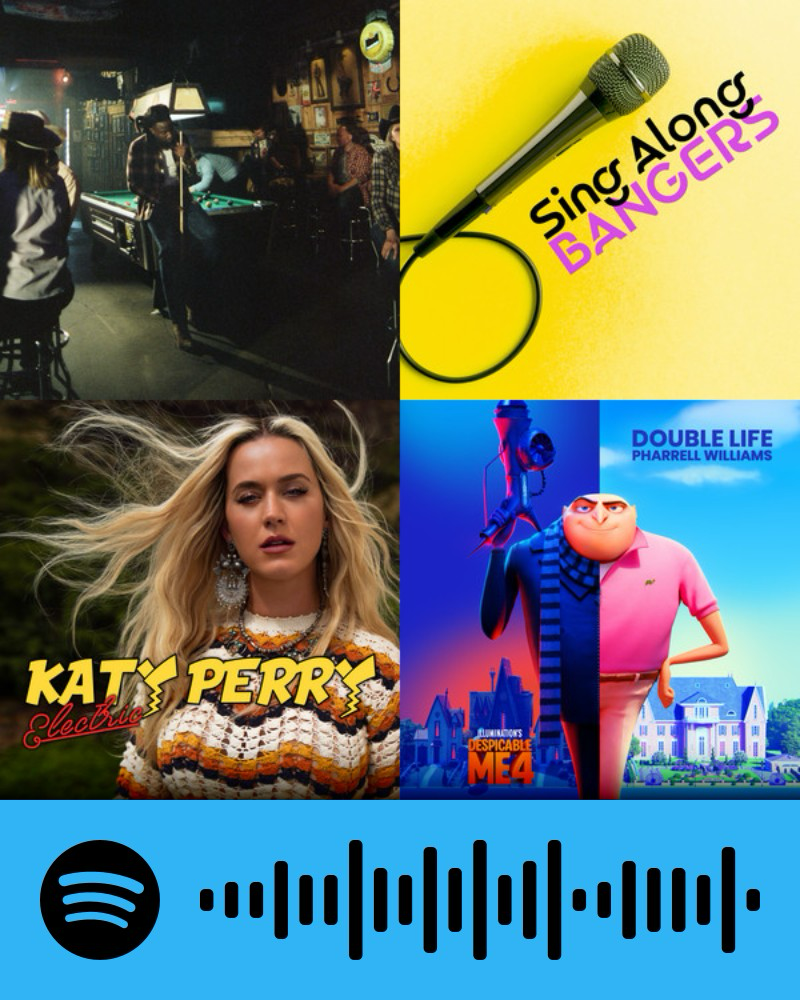

| Songs and Artists | Release Date | Country of Origin(s) | Genre | Raiting and Comments |
|---|---|---|---|---|
| "A Bar Song(Tipsy)" (clean) by: Shaboozey | 2024-04-12 | United States | Country | 7/10 This song is pretty good has a nice beat but not too familiar with it |
| "Double Life-From 'Despicable Me 4'" by: Pharrell Williams | 2024-06-14 | United States | Hip-Hop/Rap | 9/10 I like the song |
| "Electric-Pokemon 25 Version" by: Katy Perry | 2021-05-14 | United States | Electropop | 8/10 Nice chill music and fun lyrics |
| "Payphone" by: Maroon 5 | 2012-04-16 | United States | Pop | 6/10 I am not a fan of this song but makes a good party song |
| "Dynamite" by: Taio Cruz | 2010-05-30 | United Kingdom | Electropop R&B | 8/10 I enjoy the song I just think its little too old for me |
| "Good Time" by Owl City, Carly Rae Jepsen | 2012-06-24 | Canada/United States | Pop | 10/10 I always enjoy a OG song |
| "Counting Stars" by OneRepublic | 2013-06-14 | United States | Pop rock | 8/10 I like how upbeat it is |
| "Renegades" by X Ambassadors | 2015-03-03 | United States | Rock/Pop | 8.798/10 I like it I enjoy the beats |
| "Can't Hold Us (feat. Ray Dalton)" by: Macklemore, Ryan Lewis, Macklemore & Ryan Lewis, Ray Dalton | 2011-08-16 | United States | Hip Hop | 10/10 I enjoy the song because its fast pace I like the music and I can dance to it |
| "High Hopes" by: Panic! At The Disco | 2018-05-23 | United States | Pop Rock | 7/10 only a 7 because I heard it so many times |
